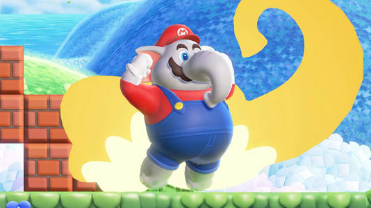
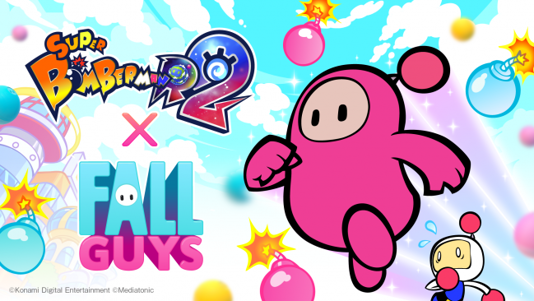

Nintendo afirma que Charles Martinet não está envolvido em Super Marios Bros. Wonder
Após a notícia de que Charles Martinet não dublará mais personagens da
Nintendo,a empresa confirmou ao IGN que o dublador original de Mario também não estará envolvido
em Super Mario Bros.
Embora a Nintendo não estivesse pronta para revelar quem seria a nova voz de Mario, reiterou que
Charles continuará encantando os fãs do personagem em todo o mundo com seu novo papel como
Embaixador do Mario.
"Embora Charles não esteja envolvido em Super Mario Bros. Wonder, estamos empolgados em honrar
seu legado e contribuições, inclusive olhando para o que ele fará como Embaixador do Mario",
disse um porta-voz da Nintendo para o IGN. "Os dubladores dos personagens serão creditados nos
créditos do jogo, então, por favor, aguarde o lançamento do jogo."
Ler Mais

Fall Guys e Bomberman estão se unindo de volta
Fall Guys e Bomberman estão se unindo de volta© Gamereactor
A Konami e a Mediatonic anunciaram mais um crossover entre Fall Guys e Bomberman. Esta nova
colaboração verá um feijão de Fall Guys fazendo sua estreia em Super Bomberman R 2, como um
personagem jogável.
De acordo com um comunicado de imprensa, fomos informados de que este personagem será apelidado
de Bean Bomber, e estará disponível para aquisição através da loja do jogo em 14 de setembro. O
personagem terá que se esquivar e correr no novo modo Castle que foi criado por jogadores de
todo o mundo e chegará ao jogo no mesmo dia, que será 14 de setembro.
Não há menção ao preço do Bean Bomber, mas somos informados de que Super Bomberman R 2 será
lançado no PlayStation, Xbox, PC e Nintendo Switch com capacidade total de crossplay, e estreará
já em 13 de setembro como um produto digital.
Ler Mais